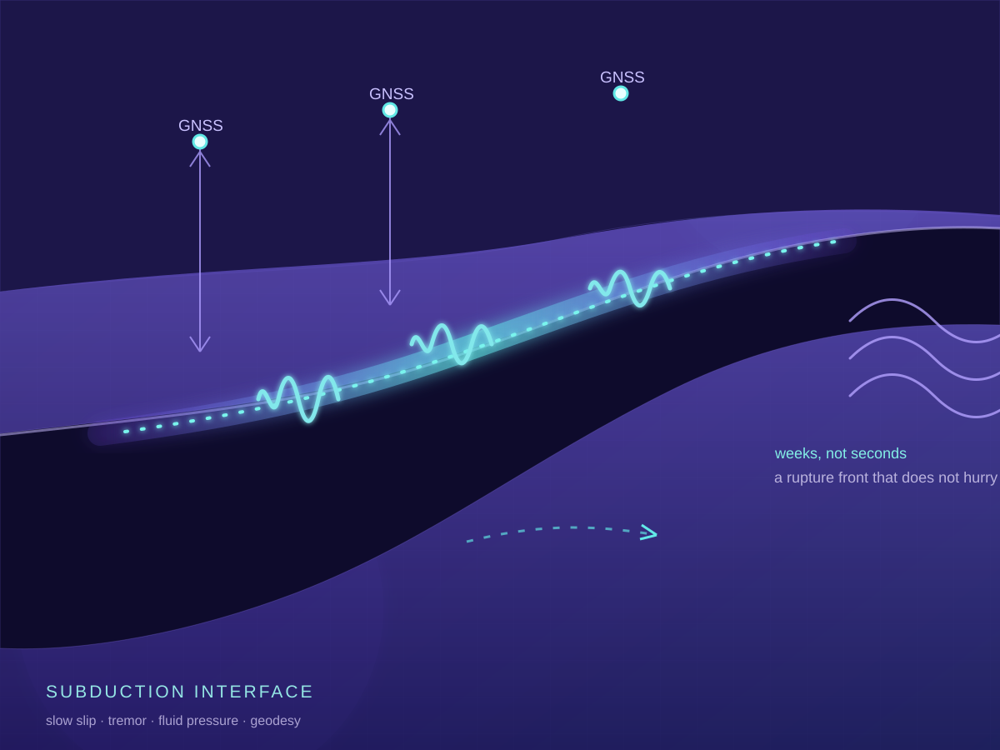
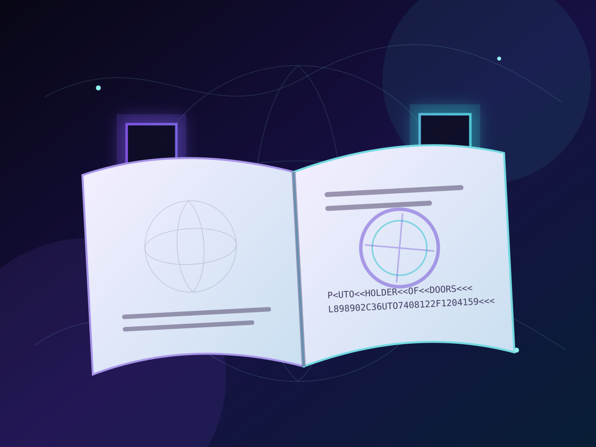

Physics for everyoneFísica para TodosPhysik für alle面向所有人的物理

Read the postsLee los postsBeiträge lesen阅读文章
Short routes into difficult ideas, with a link to the detailed calculations when they are available.Rutas breves hacia ideas difíciles, con un enlace a los cálculos detallados cuando están disponibles.Kurze Wege zu schwierigen Ideen, mit einem Link zu den detaillierten Berechnungen, sofern vorhanden.用简短的路径进入困难概念，并在有资料时提供详细计算。
Recent postsPosts recientesNeueste Beiträge最新文章
There are no recent posts yet.Todavía no hay posts recientes.Noch keine neuen Beiträge.暂时还没有最新文章。
Featured postsPosts destacadosHervorgehobene Beiträge精选文章
GENUINE CURIOSITYGENUINA CURIOSIDADECHTE NEUGIER纯粹的好奇心
Knowledge for knowledge’s sakeSaber por SaberWissen um des Wissens willen为求知而求知
Facts, questions and strange connections worth knowing even when they have no immediate use.Datos, preguntas y conexiones extrañas que vale la pena conocer aunque no tengan una utilidad inmediata.Fakten, Fragen und seltsame Verbindungen, die wissenswert sind, auch wenn sie keinen unmittelbaren Nutzen haben.即使没有眼前用途，也值得了解的事实、问题和奇妙关联。
Latest Knowledge for knowledge’s sake postsPosts recientes de Saber por SaberNeueste Beiträge aus Wissen um des Wissens willen最新“为求知而求知”文章

23 Aug 202623 ago 202623. Aug. 20262026年8月23日28 min28 min28 Min.28分钟EARTH SCIENCECIENCIAS DE LA TIERRAERDWISSENSCHAFT地球科学
The earthquake that takes weeks to happenEl terremoto que tarda semanas en ocurrirDas Erdbeben, das Wochen braucht, um zu geschehen需要数周才能发生的地震
How slow slip, tremor, fluids and seafloor geodesy reveal the continuum between locked faults and sudden rupture.Cómo el deslizamiento lento, el tremor, los fluidos y la geodesia marina revelan el continuo entre las fallas bloqueadas y la ruptura súbita.Wie Slow Slip, Tremor, Fluide und Meeresbodengeodäsie das Kontinuum zwischen verriegelten Störungen und plötzlichem Bruch sichtbar machen.慢滑移、震颤、流体与海底测地学，如何揭示锁固断层和突然破裂之间的连续谱。
Read the curiosityLeer la curiosidadKuriosität lesen阅读趣闻 →

23 Aug 202623 ago 202623. Aug. 20262026年8月23日16 min16 min16 Min.16分钟HISTORYHISTORIAGESCHICHTE历史
The little book that turned the world into a collection of doorsEl pequeño libro que convirtió el mundo en una colección de puertasDas kleine Buch, das die Welt in eine Sammlung von Türen verwandelte把世界变成一扇扇门的小册子
How war, refugees, machine-readable code and biometrics turned the passport into a compact architecture of recognition and permission.Cómo la guerra, los refugiados, el código de lectura mecánica y la biometría convirtieron el pasaporte en una arquitectura compacta de reconocimiento y permiso.Wie Krieg, Flucht, maschinenlesbarer Code und Biometrie den Reisepass in eine kompakte Architektur aus Anerkennung und Erlaubnis verwandelten.战争、难民、机读代码与生物识别技术，如何把护照变成一套紧凑的承认与许可架构。
Read the curiosityLeer la curiosidadKuriosität lesen阅读趣闻 →
The first curiosity is on its way.La primera curiosidad está en camino.Die erste Kuriosität ist unterwegs.第一篇趣闻正在路上。